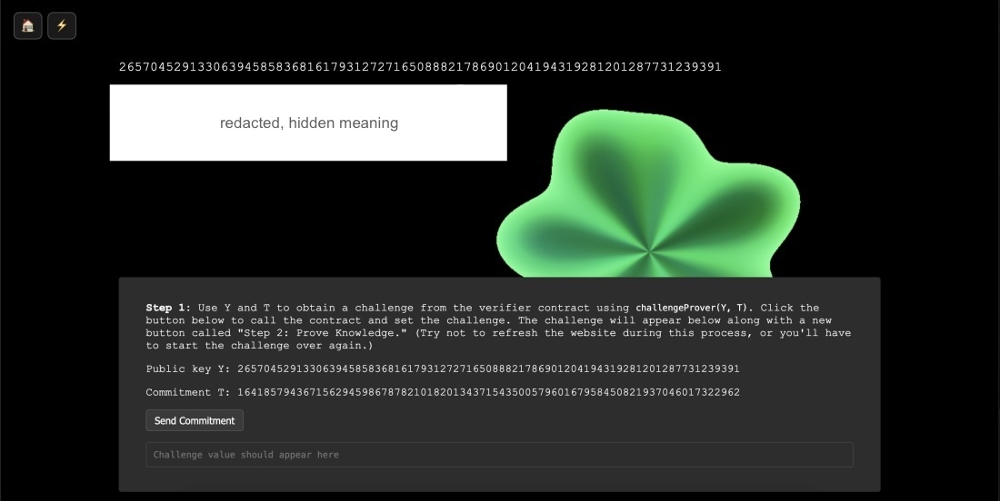
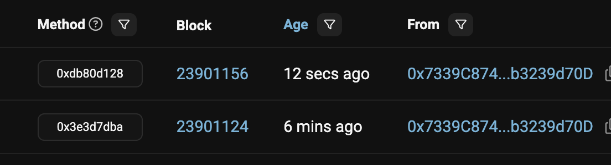
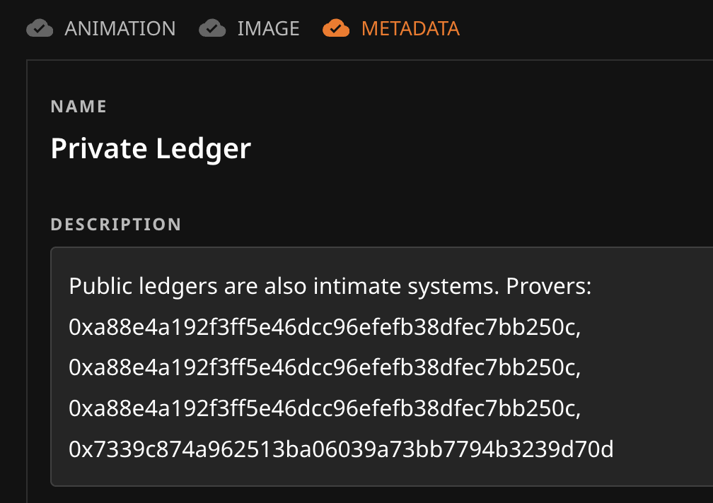
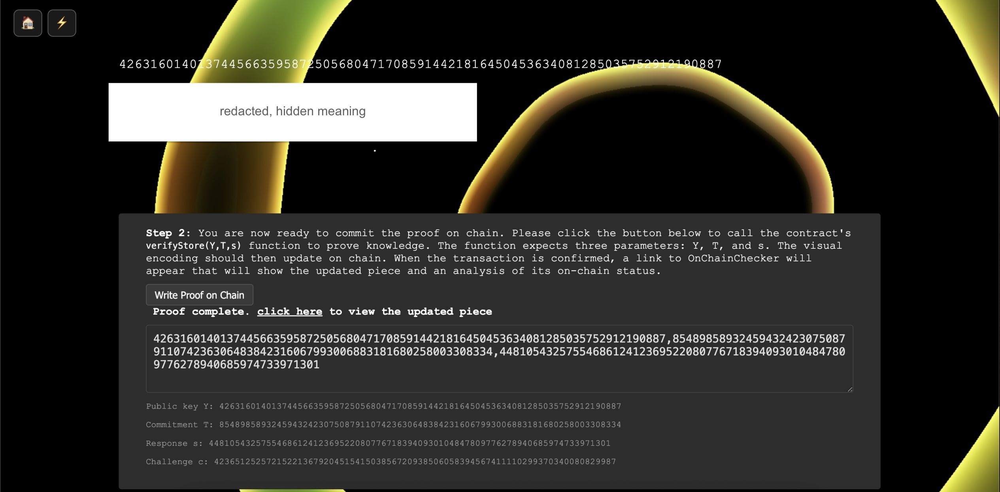

jonooo and I had a chat late one
night
before Intimate Systems released. The conversation seemed well suited as an explainer
itself,
illustrating the piece and how it works, because jonooo interacted with the contract and
participated as a "prover." I've adapted the questions and responses with permission below,
sharing the very visuals we shared along the way (keeping our secrets secret, of course).
jonooo: I was just looking at your piece! Can you tell me about it?
Takens Theorem: Sure! Here's some material from the site, which I'll share
in
more detail soon. "Private Ledger" explores a divide between public and private. It invites
its
collector to formulate a zero-knowledge (ZK) proof which is then written to the public
ledger,
proving that a particular meaning exists. The collector can then alter a visual
representation
based on this proof, and anyone on the chain including I could confirm knowledge of it (if
the
collector chooses to share this hidden meaning with others).
The public ledger indexes countless intimate secrets like this. Every gentle click
on a
hardware wallet could happen alongside hidden ideas and emotions that remain only in the
minds
of those involved - their "private ledger." The visual itself depicts this tension, a
structure
at the center accumulating with each proof, but the idea itself encoded in a kind of
organic,
undulating visual behind it.
jonooo: I love this! I know there are murmurs around zk proofs, I know 113
has
talked about
it a good bit.
Takens Theorem: Yeah, there're the amazing
innovations by
Mathcastles, they call them "information-asymmetric artworks," very nice, it's
certainly
inspired by related ideas about intimate secrets. There's also Paul Seidler's
Real Abstraction
from last year's
World Computer Sculpture Garden, again building on the concept of
information asymmetry among those observing the ledger - intimate secrets that the chain can
hold. "Private Ledger" is inspired by these kinds of ideas, they are technical of course but
they extend very intimate shared concepts and ideas sometimes private, obscured inside only
one
or just a few minds.
jonooo: Nice! Yeah, good these works are accessible from that perpsective
even
if they are computationally intensive, or maybe they're not?
Takens Theorem: For Private Ledger, I used a beautiful ZK trick that
exploits
discrete log as
they call it - no fancy circuits which can be expensive for proofs - just modular
exponentiation
of
giant integers. Which isn't free but pretty cheap.
I read a variety of
explainers for this specific approach to ZK proofs and built Private
Ledger to illustrate a simple version of it (it's called the Sigma protocol with Schnorr
identification). There are all kinds of details in ZK math, it's incredible - you can prove
the
soundness of a method for example, certainty that an attacker could not break it. However
I'm
not a cryptographer, so any collector or viewer of the piece should be aware that this is a
very
simple version of the algorithm and should not be used for any real-world applications.
We'll
see if anyone cracks it!
jonooo: Haha fair point! I think, all the more interesting for the lore:
kintsugi.
jonooo: It's an area I'm particularly interested in, but admittedly not
super
well versed. I think it's beautiful and approaches the theme in a very accurate way while
introducing new elements like zk. Can you tell me more about the visual side?
Takens Theorem: Yes the on-chain animation is basically WebGL and uses a
3-wave
trigonometric signed distance field
function that produces these undulations... this form was inspired by your notes from the
artist
brief:
"Think layering, abstraction, controlled motion, or systems that reveal traces
of
human intent. The goal is not to illustrate emotion, but to allow emotion or resonance
to
emerge through structure, rhythm, or behavior."
The collector chooses a message that determines these dynamics. You can think of the
visual as encoding their hidden message into it, the visual is chosen and expresses it. Then
when the collector proves that their message exists on chain, the piece updates to that
knowledge.
The collector can choose to share that meaning with others, who can prove knowledge
of
it - without revealing it on chain at all, it will add to that scaffold at the center. The
chain
proves the presence of the collector's intention.
I used trig functions, waves of sine and cosine functions shaped by the
cryptographic
proof, to express biological rhythms because the private ledger is an organic one.
Would you like to participate and add to my piece, as I'm the current owner?
jonooo: Beautiful! Absolutely I'd love to try it out! There's a level of
reflection too with the collector even choosing what to say - intimate from both exterior
and
interior spaces.
Takens Theorem: Yes, the dynamic can change quite a bit, across some
palettes,
dynamics, etc. So there is some semantic encoding that is possible - if the idea implies a
frantic semiosis they can set the visual encoding to match the meaning.
jonooo prepares interface with hidden meaning ██████████

Takens Theorem: The process is: (i) type in the secret meaning (must match
exactly) and check recovering the same visual, (ii) step 1: click the lightning bolt to
prepare
a commitment and challenge (first step to showing you have the knowledge), then (iii) step
2:
finalize the proof and the piece should update.

jonooo: Heheheheh. That's me.
Takens Theorem: Wow, it worked.
You're in the metadata now and the 4th social "layer" on the piece.
That phrase is in both our minds, proven on chain.
I love giant integers.
jonooo: Wow, can I screenshot this and
share?
Thank you so much for involving me in this process!
Takens Theorem: Sure please do! Thank you! All feedback welcomed. Thanks
for
taking it for a spin!

jonooo: How do you see that aspect happening in terms of proving the
knowledge?
What is that experience meant to be like?
Takens Theorem: The contract implements an interactive zero-knowledge
proof.
You have to take two steps, two transactions. The proof contract basically gives the
collector
(or other prover, like you) a challenge that numerically means, "Okay if you know how to get
that huge number from a secret, then integrate this challenge and come back with a valid
signature of that knowledge." Then the second transaction will write that proof to the
chain.
The idea is that anyone who can see on the public ledger how this contract works
should
be confident that you and I have the same specific idea in our minds yet would have no idea
what
that idea is - only that we've proven mutual knowledge of it on chain.
jonooo: Does it change with each shared knowledge proof? As well as with
other
people
creating their own proofs?
Takens Theorem: Your role here could be called a "friend prover." I gave
you
the secret, and you proved knowledge. The piece then expands the scaffold in the center. I
was
tempted to have the piece be more unstable over time, but preferred the expression here that
a
specific idea is now passing through many wallets... many individuals... the idea encoded by
the
collector uniquely.
jonooo: As the owner of the piece, can you create multiple messages? Can
anyone?
Takens Theorem: The collector can create a new meaning anytime they want,
but
it resets the scaffold (the geometric structure that represents the shared knowledge). The
collector can switch meanings back and forth too... as current owner, I can alter the
visual, a
new idea, then have some proofs, but then go back to the prior message, etc. Always
updatable
into the semantics the collector wants. I decided to make it as 1/1 as possible.
Would you like to try a new meaning and be its first prover?
Takens sets new hidden meaning and jonooo prepares interface with ██████████

Takens Theorem: You'll be the first prover, the first square at the center.
jonooo: So only the owner can control this?
Takens Theorem: Yeah exactly. I decided to make it as 1/1 as possible. The
collector I share this piece with has control over the asset (the usual caveats, I should
add,
such as unforeseen bugs or implementation issues with the proof system!). This is the
intention.
Though of course we could expand this into a whole suite of such tokens with distinct
meanings
etc. In this case, the single collector, one human mind, originates these intimate ideas.
They
can propagate the ideas to others, who then become provers in their own right. The collector
can
always choose to keep it private or share it widely.
jonooo: That's interesting. Is there a limit to how much text you can use
in
the secret?
Takens Theorem: Not really. Might be limited by your browser. It hashes the
text, so you could have a huge meaning. That becomes concomitantly harder to remember of
course.
All these little details about mind and matter, cold compute and public/private ledgers.
jonooo: If the owner forgets the meaning... no more proofs will be
possible.
Like forgetting a password. Feature or bug?
Takens Theorem: Definitely a feature. The private ledger is biological. It
decays in reality (literally). Memories fade. If the collector forgets the current meaning,
they
would have to update the piece with a new one.
jonooo: Very meaningful to do this show and have all of these one on one
conversations
about the work. Feeling inspired.
Takens Theorem: There are little features that were intended, and could be
expanded upon. For example, the contract stores an array of prior proofs so it's possible to
recover prior pieces. Can see the history of intimate ideas. (Without knowing what they are
of
course, just their visual and extent of shared knowledge.) The sculpture contract I'm going
to
build will use this. A history of secret ideas.
jonooo: What's the sculpture contract?
Takens Theorem: We will be releasing this later in the week, an homage to
the
World Computer Sculpture
Garden from 0xfff and others last year. It will be fun to implement - I'm going to
expose the array for use as gestures, etc.
jonooo: So many fun ways to use this!
Takens Theorem: Your prompt was wonderful. Challenging in a great way. I'm
excited to see what people build with it!